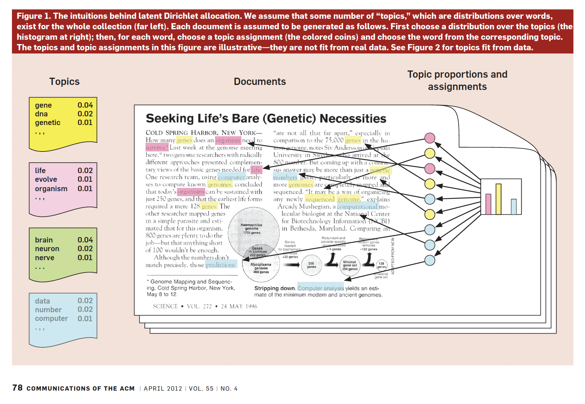
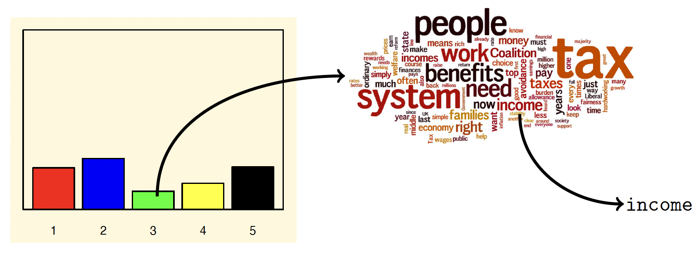

PPOL 6801 - Text as Data - Computational Linguistics
Week 6: Unsupervised Learning:
Topic Models
Housekeeping
Let’s quickly review your future assignments:
Problem Set 3
- No problem set 2
- Assigned: week 9, March 20
- Due: Following week.
Replication Class II
- In group
- Select you paper this week
- More rigorous ~> Contact the author soon to get the raw data!
- Class: April 03
Final Project
- Proposal: EOD Friday, Week 9, March 20
- you have to meet with me before submitting your proposal
- Send me a draft of the proposal before the meeting
- Presentation: Week 14.
- Proposal: EOD Friday, Week 9, March 20
Where are we?
We started from pre-processing text as data, representing text as numbers, describing features of the tex, and learned how to measure concepts in text:
- Last Week: Supervised learning ~ Training your models
- Crowdsourcing label classification
- Full pipeline for model training
- Regularized regressions
- Evaluating Performance
- This week: unsupervised learning
- Begin to take a purely inductive approach
- Discovery
- Look for things we don’t know about in the text.
Overview: Unsupervised Learning
- Data: humans, documents, votes, etc. are not pre-labelled in terms of some underlying concept.
- Think about congressional speeches, we know the author, their party, other metadata, but:
- we don’t yet know what that speech ‘represents’ in terms of its latent properties, what ‘kind’ of speech it is, what ‘topics’ it covers, what speeches it is similar to conceptually, etc.
- Think about congressional speeches, we know the author, their party, other metadata, but:
- Goal is to take the observations and find hidden structure and meaning in them.
- similarity
- groups
- topics
- association between word, etc…
Main challenges of Topic Models
Hard to get it right
unsupervised learning requires several ad-hoc decisions and these decisions matter for quality of your results
- number of clusters
- number of topics
- pre-processing steps
Domain knowledge (and honestly a bit of randomness) guides a lot of these decisions
Hard to know if you are doing right!
in contrast to supervised approaches, we won’t know ‘how correct’ the output is in a simple statistical sense
use statistical measures of fit/unfit of different modeling decisions
- but in general, it will involve a hugely amount of qualitative assessment.
No easy measure of acccuracy, recall and precision.
Clustering Methods
K-means Clustering
Purpose: look for ‘groups’ in data explicitly.
- Input: text + number of clusters
- Output: documents ~> clusters
Visually
Visually
Visually
Visually
Cluster Methods vs Topic Models
Topics models can be thought as a probabilistic generalization of of clustering methods
Clustering:
- Every document is assigned to a cluster
Topic Models:
every document has a probability distribution of topic.
every topic has a probability distribution of words.
Topid Models: Intuition
Capture words that are more likely to occur together across a set of documents.
Assign these words a probability of being part of a cluster (topic).
Assign documents a probability of being associated of these clusters.
Documents: formed from probability distribution of topics
- a speech can be 40% about trade, 30% about sports, 10% about health, and 20% spread across topics you don’t think make much sense
Topics: fromed from probability distribution over words
- the topic health will have words like hospital, clinic, dr., sick, cancer
Blei, 2012,

Intuition: Language Model
Step 1: For each document:
- Randomly choose a distribution over topics. That is, choose one of many multinomial distributions, each which mixes the topics in different proportions.
Step 2: Then, for every word in the document
- Randomly choose a topic from the distribution over topics from step 1.
- Randomly choose a word from the distribution over the vocabulary that the topic implies.
Step 1: or what a multinomial distribution looks like
For each document ~ Randomly choose a distribution over topics from a multinomal distribution

Step 2: sampling words
For every word:
Randomly choose a topic from the distribution over topics from step 1.
Randomly choose a word from the distribution over the vocabulary that the topic implies.

Latent Dirichlet Allocation
To estimate the model, we need to assume some known mathematical distributions for this data generating process:
For every topic:
- \(\beta_k \sim \text{Dirichlet}(\tau)\)
For every document:
- \(\theta_d \sim \text{Dirichlet}(\alpha)\),
For every word:
- a topic \(z_{dn} \sim \text{Multinomial}(\theta_d)\).
- a word \(w_{dn} \sim \text{Multinomial}(\beta_{z_{dn}})\)
where:
- \(\alpha\) and \(\tau\) are hyperparameter of the Dirichlet priors
- \(\beta_k\) is drawn from a Dirichlet for per-topic word distribution
- \(\theta_d\) is drawn from a Dirichlet for the topic distribution for documents - \(K\) topics
- \(D\) documents in the corpus
- \(N_d\) words in document \(d\)
Aside: Dirichlet distribution
The Dirichlet distribution is a conjugate prior for the multinomial distribution.
- It makes joint distributions easier to calculate because we know their families.
It is parameterized by a vector of positive real numbers (\(alpha\))
Larger values of \(\alpha\) (assuming we are in symmetric case) mean we think (a priori) that documents are generally an even mix of the topics.
If \(\alpha\) is small (less than 1) we think a given document is generally from one or a few topics.
Visually

Source: Andrew Heiss
Exercise: Plate Notation

Inference: How to estimate all these parameters?
Use the observed data, the words, to make an inference about the latent parameters: the \(\beta\)s, the \(z\)s, the \(\theta\)s.
We start with the joint distribution implied by our language model (Blei, 2012):
\[ p(\beta_{1:K}, \theta_{1:D}, z_{1:D}, w_{1:D})= \prod_{K}^{i=1}p(\beta_i)\prod_{D}^{d=1}p(\theta_d)(\prod_{N}^{n=1}p(z_{d,n}|\theta_d)p(w_{d,n}|\beta_{1:K},z_{d,n}) \]
To get to the conditional:
\[ p(\beta_{1:K}, \theta_{1:D}, z_{1:D}|w_{1:D})=\frac{p(\beta_{1:K}, \theta_{1:D}, z_{1:D}, w_{1:D})}{p(w_{1:D})} \]
The denominator is hard complicate to be estimate (requires integration for every word for every topic):
- Simulate with Gibbs Sampling or Variational Inference.
- Take a Bayesian statistic course to learn more about this type of inference!
Show me results!

Choosing the number of topics
Choosing K is “one of the most difficult questions in unsupervised learning” (Grimmer and Stewart, 2013, p.19)
Common approach: decide based on cross-validated statistical measures model fit or other measures of topic quality.

Validation of topics
Working with topic models require a lot of back-and-forth and humans in the loop.
How to measure the quality of the topics?
- Crowdsourcing for:
- whether a topic has (human-identifiable) semantic coherence: word intrusion, asking subjects to identify a spurious word inserted into a topic
- whether the association between a document and a topic makes sense: topic intrusion, asking subjects to identify a topic that was not associated with the document by the model
- See Ying et al, 2022, Political Analysis.
Applications
Barbera et al, American Political Science Review, 2020.
Data: tweets sent by US legislators, samples of the public, and media outlets.
LDA with K = 100 topics
Topic predictions are used to understand agenda-setting dynamics (who leads? who follows?)
Conclusion: Legislators are more likely to follow, than to lead, discussion of public issues,
Decisions:
k=100
Motolinia, American Political Science Review, 2021
- Data: transcripts of legislative sessions in Mexican states
- Correlated Topic model to identify “particularistic” legislation; i.e. laws with clear benefits to voters
- Each topic is then classified into particularistic or not
- Validation: correlation with spending
- Use exogenous electoral reform that allowed legislators to be re-elected
Exercise
Take 5-min to read the methods sections of this paper
List to me some of the decisions the authors need to make to get the topic models to work.
Do you think these make sense? What would you do different
Extensions: Many more beyond LDA
Structural topic model: allow (1) topic prevalence, (2) topic content to vary as a function of document-level covariates (e.g., how do topics vary over time or documents produced in 1990 talk about something differently than documents produced in 2020?); implemented in stm in R (Roberts, Stewart, Tingley, Benoit)
Correlated topic model: way to explore between-topic relationships (Blei and Lafferty, 2017); implemented in topicmodels in R; possibly somewhere in Python as well!
Keyword-assisted topic model: seed topic model with keywords to try to increase the face validity of topics to what you’re trying to measure; implemented in keyATM in R (Eshima, Imai, Sasaki, 2019)
BertTopic: BERTopic is a topic modeling technique that leverages transformers and TF-IDF to create dense clusters of words.
STM: Adding Structure to the LDA

Prevalence: Prior on the mixture over topics is now document-specific, and can be a function of covariates.
Content: distribution over words is now document-specific and can be a function of covariates.
Keyword-assisted topic model: summary

Keyword-assisted topic model: performance